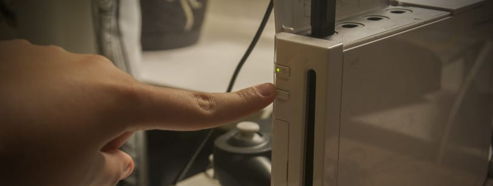
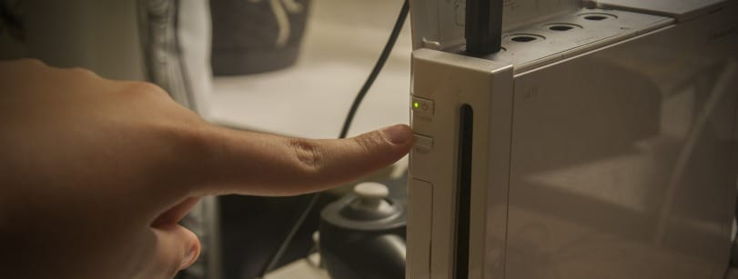
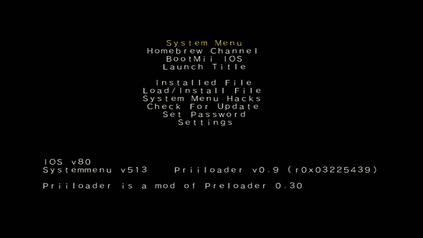

Priiloader
Solltest du hinsichtlich dieses Tutorials Hilfe benötigen, trete bitte dem RiiConnect24 Discord-Server bei (empfohlen), oder kontaktiere uns per E-Mail unter [email protected].
Priiloader fügt eine Schutzebene vor Bricks zu deiner Wii hinzu. Es lädt vor dem Wii-Menü (daher der Name). Diese Werkzeug kann auch Hacks für dein Wii-Menü aktivieren und kann genutzt werden, um den Homebrew-Kanal schnell zu starten, oder eine Homebrew, die du starten möchtest!

Installiere den Priiloader nicht auf einer vWii (Wii Modus auf der Wii U). Du wirst deine vWii dadurch bricken.
Voraussetzungen
- Eine SD-Karte oder ein USB-Laufwerk
- Priiloader Installer
Anleitung
Abschnitt 1 - Herunterladen/Installieren
- Lade den Priiloader-Installer herunter und entpacke ihn in das Stammverzeichnis deiner SD-Karte oder deines USB-Laufwerks.
Abschnitt 2 - Priiloader installieren
- Starte den Homebrew-Kanal auf deiner Wii.
- Starte den Priiloader Installer.
- Drücke die Plus-Taste auf der Wii-Fernbedienung oder den A-Knopf auf einem GameCube-Controller.


Abschnitt 3 - Öffnen/Konfigurieren von Priiloader
- Halte den RESET-Knopf gedrückt während du deine Wii einschaltest.
- Wenn du eine Wii mini verwendest, schließe eine USB-Tastatur an und halte die Escape-Taste gedrückt, während du die Konsole einschaltest.
 

- Du solltest nun das Priiloader-Menü sehen.
- Gehe zu
System Menu Hacks.
Wenn du ein USB-Laufwerk verwendest, um Priiloader zu installieren, stelle sicher, dass keine SD-Karte gleichzeitig eingelegt ist. Dies führt dazu, dass Priiloader die Datei hacks_hash.ini nicht finden kann.
- Wir empfehlen dir, folgende Hacks einzuschalten:
Region Free EVERYTHING,Block Disc UpdatesundBlock Online Updates.
- Scrolle herunter zu
save settingsund drücke A, anschliessend drücke B, um zurück ins Hauptmenü von Priiloader zu gelangen. - Scrolle zu
Homebrew Channelund drücke A um ihn zu starten.
Liste der System-Menü-Hacks
Dies ist eine Liste der Hacks, die du mit Priiloader aktivieren kannst.
| Hack | Beschreibung |
|---|---|
| Block Disc Updates | Entfernt den “Wii System-Update”-Bildschirm welcher dich in einigen Spielen dazu auffordert, vorher ein Systemupdate durchzuführen um das Spiel zu spielen. |
| Block Online Updates | Deaktiviert die Update-Funktion deiner Wii. Updates werden mit 32007 fehlschlagen. |
| Auto-Press A at Health Screen | Drückt auf dem Bildschirm “Gesundheit und Sicherheit” automatisch die A-Taste, um ihn zu schließen. |
| Replace Health Screen with Backmenu | Ersetzt den Bildschirm “Gesundheit und Sicherheit” mit der Animation, die bei der Rückkehr ins Wii-Menü angezeigt wird. |
| Move Disc Channel | Erlaubt das platzieren des Disc-Kanals überall im Wii-Menü. Er befindet sich normalerweise an fester Position oben links auf der ersten Seite. |
| Wiimmfi Patch v4 | Aktualisiert automatisch alle Spiele welche du im Disc-Kanal startest um sie mit Wiimmfi nutzen zu können. |
| 480p graphics fix in system menu | Behebt einen kleinen Fehler des 480p-Modus im Wii-Menü. |
| Remove NoCopy Save File Protection | Erlaubt es dir, normalerweise gesperrte Speicherdateien aus der Datenverwaltung auf deine SD-Karte zu kopieren |
| Region Free EVERYTHING | Deaktiviert die Regionssperre für alle Wii-Anwendungen, inklusive der Heruntergeladenen. |
| Region Free GC Games (No VM Patch) | Deaktiviert die Regionalsperre für GameCube-Discs. |
| Region Free Wii Games | Deaktiviert die Regionalsperre für Wii-Discs. |
| Region Free Channels | Deaktiviert die Regionalsperre für installierte Kanäle. |
| No System Menu Sounds AT ALL | Deaktiviert alle Wii-Menü-Soundeffekte. |
| No System Menu Background Music | Deaktiviert die Wii-Menü-Hintergrundmusik. |
| Re-Enable Bannerbomb v2 | Aktiviert den “Bannerbomb”-Exploit auf der neuesten Wii-Systemversion. Wird nicht benötigt, wenn der Homebrew-Kanal bereits installiert ist. |
| OSReport to UsbGecko(slot B) | Sendet Wii-Menü-Logs an ein Debugging-Gerät, welches sich im Memory Card-Steckplatz B befindet. |
| OSReport to UsbGecko(GeckoOS,B) | Sendet Wii-Menü-Logs an ein Debugging-Gerät, welches sich im Memory Card-Steckplatz B befindet, falls das Wii-Menü von Gecko OS gestartet wird. |
| Force Standard Recovery Mode | Startet die Konsole automatisch im Wiederherstellungsmodus. Wird genutzt um Wiederherstellungsdisks zu starten, wodurch Nutzer Bricks ihrer Wii-Systeme beheben können. |
| Remove Diagnostic Disc Check | Entfernt die Überprüfung in der Wii, ob das eingeschobene Spiel die Title-ID der “Wii Startup Disc” hat. |
| Lock System Menu with Black Screen | Belässt das Wii-Menü bei einem schwarzen Bild, wodurch es unbenutzbar wird. (Aktiviere das nicht) |
| No-Delete HAXX,JODI,DVDX,DISC,DISK,RZDx | Reaktiviert Kanäle mit diesen Title-IDs (ursprünglich durch System-Updates blockiert, da sie Exploits sind). |
| Force Disc Games to run under IOS249 | Zwingt Disk-Anwendungen dazu, cIOS 249 als IOS des Spiels zu benutzen. Auch wenn es allein nicht ausreicht um selbstgebrannte Discs zu spielen wird es benötigt um diese abzuspielen. (Kann dir Error 002 für nicht-gebrannte Spiele zeigen) |
Continue to the Dos and Don’ts of Wii Modding
These are some guidelines to ensure you don’t brick your Wii.